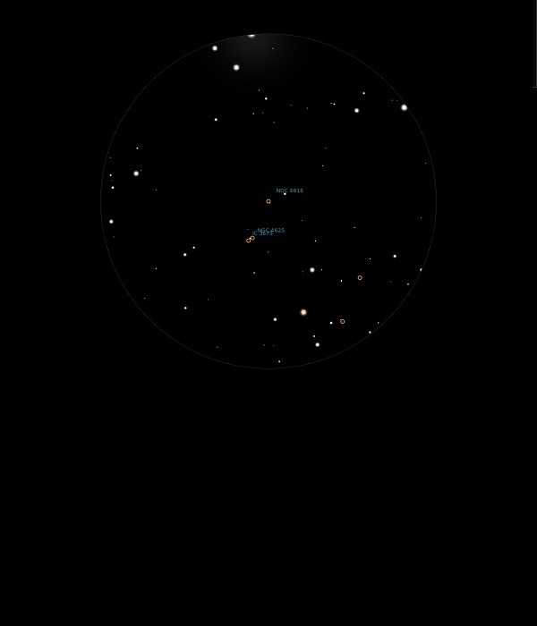

NGC 4618

Dwarf Galaxy in Canes Venatici
NGC 4618
Mag 11.6
03/07/14
Just a faint haze close to a Mag 11.0 star
Two other Galaxies of Mags 12.3 and 13.0 are in the same 12mm FOV but neither visible in a still not dark sky at Midnight